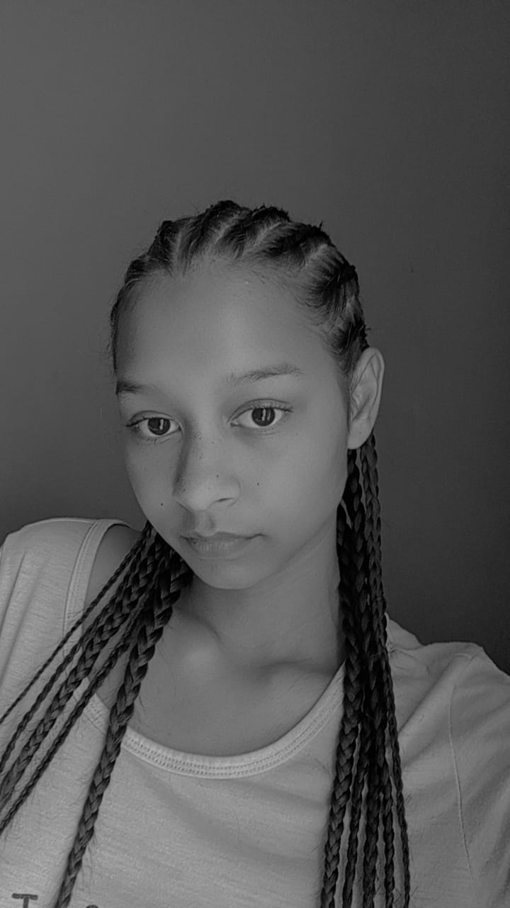

When I started High School,in grade 8 I saw girls rocking Dutch braids and I thought it was cute and I really wanted to try it myself. I've discovered that it wasn't so easy so I started with a hack. I did the hack for a while and then I watched a few videos on YouTube and discovered it wasn't that difficult at all. So I started doing the Dutch braids on myself but my interest only grew further. I watched many YouTube tutorials and practiced braids on my friends and family before ultimately deciding to start my own business so now I'm doing braids as my hobby and job.
